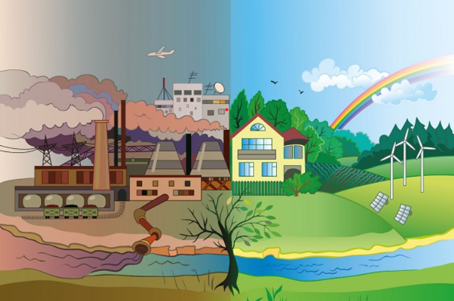

.EduWaste
Waste segregation
Introduction:

Waste segregation is the process of separating different types of waste materials into distinct categories. Proper waste segregation is essential to ensure efficient and effective waste management practices. In this article, we will discuss the importance of waste segregation and the different methods and techniques used for proper waste segregation.
Importance of Waste Segregation:
Waste segregation is an important practice that helps in reducing the amount of waste sent to landfills, conserving natural resources, and protecting the environment. Proper waste segregation ensures that recyclable materials are separated from non-recyclable materials, which can be disposed of or recycled separately. This process reduces the amount of waste that ends up in landfills, which helps in preserving the natural environment and reducing the negative impact of waste on human health and the environment.
Methods and Techniques of Waste Segregation:
There are different methods and techniques used for proper waste segregation. The following are some of the most common methods and techniques:
Source Separation:
Source separation is the process of separating different types of waste materials at the point of origin. This method is commonly used in households and commercial establishments. Source separation helps in reducing the amount of mixed waste and ensures that different types of waste materials are separated into distinct categories.
Manual Sorting:
Manual sorting is the process of manually separating different types of waste materials by hand. This method is commonly used in recycling plants where waste materials are manually sorted based on their physical properties such as size, shape, and color.
Mechanical Sorting:
Mechanical sorting is the process of separating different types of waste materials using machines. This method is commonly used in recycling plants where waste materials are sorted based on their physical properties using machines such as conveyor belts, magnetic separators, and air classifiers.
Composting:
Composting is the process of decomposing organic waste materials into a nutrient-rich soil amendment known as compost. Composting is an effective way of reducing the amount of organic waste sent to landfills and can be used for agricultural purposes.
Incineration:
Incineration is the process of burning waste materials at high temperatures to reduce their volume and convert them into ash. Incineration is commonly used for hazardous waste materials that cannot be recycled or composted.
Segregation of Different Types of Waste Materials:
Different types of waste materials require different methods of segregation. The following are some of the most common types of waste materials and their methods of segregation:
- Organic Waste:
Organic waste materials such as food waste, garden waste, and animal waste can be composted. Composting is an effective way of reducing the amount of organic waste sent to landfills. - Recyclable Materials:
Recyclable materials such as paper, cardboard, plastic, glass, and metal should be separated from non-recyclable materials. Recycling of these materials helps in conserving natural resources and reducing the amount of waste sent to landfills. - Hazardous Waste:
Hazardous waste materials such as batteries, chemicals, and medical waste should be segregated from other waste materials. Hazardous waste should be disposed of using specialized methods to prevent harm to human health and the environment.
Conclusion:
Waste segregation is an important practice that helps in reducing the amount of waste sent to landfills, conserving natural resources, and protecting the environment. Proper waste segregation requires the use of different methods and techniques depending on the type of waste material. By implementing proper waste segregation practices, we can reduce the negative impact of waste on human health and the environment, and move towards a more sustainable future.